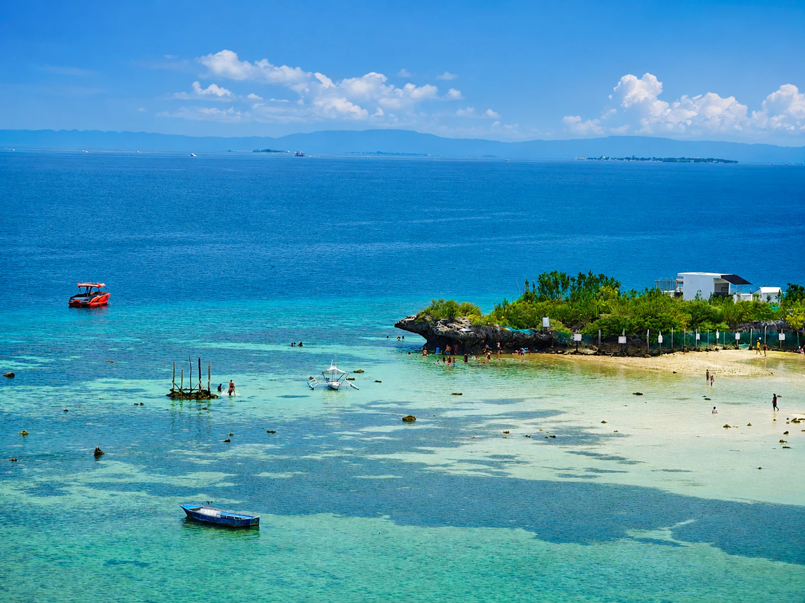
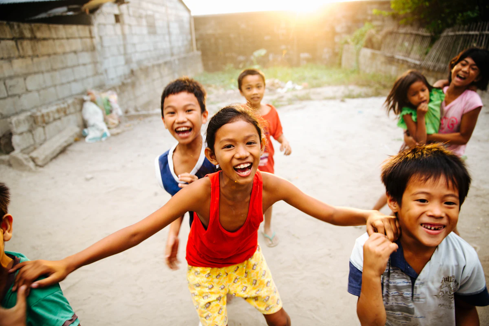
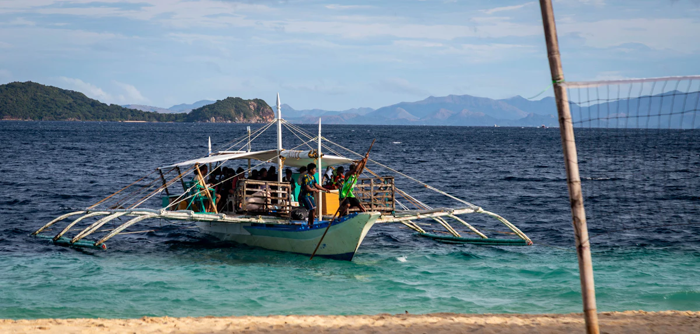
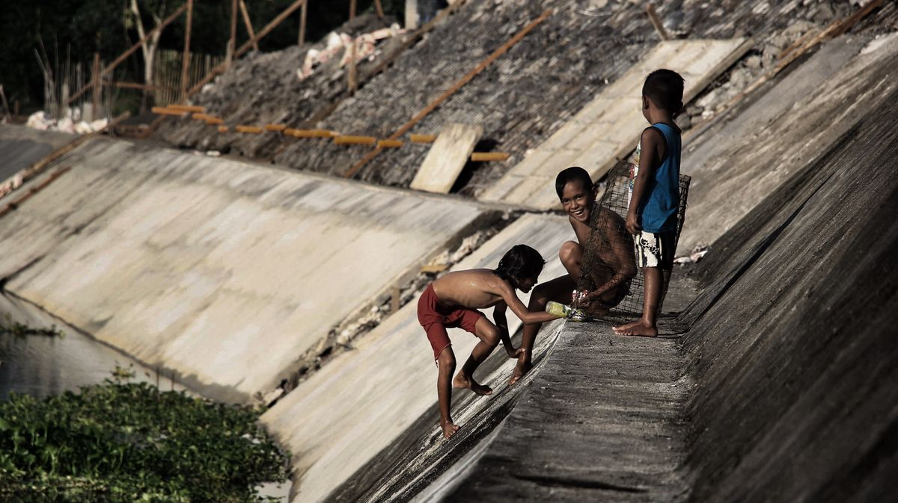
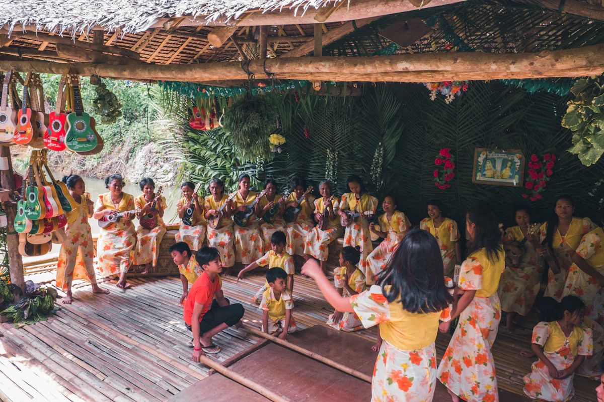
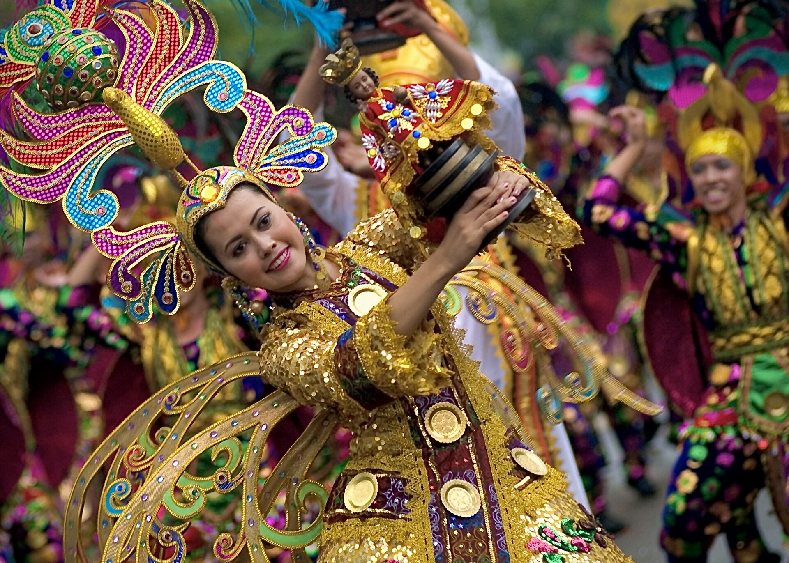
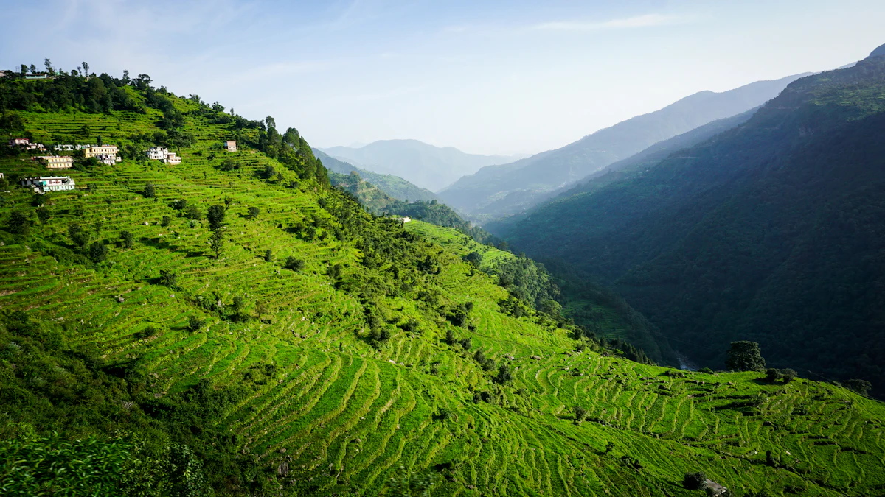
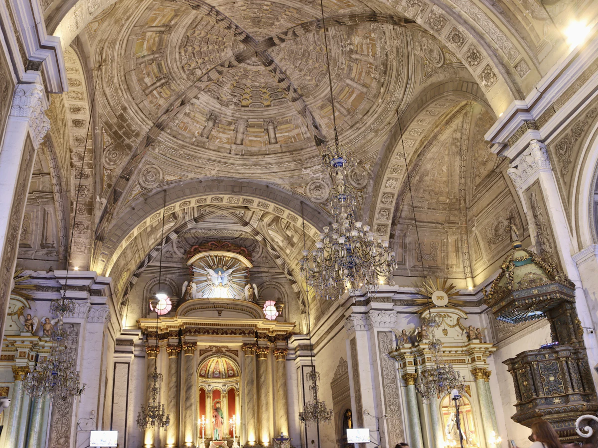

About Barangay Bocana
A story of home
The identity, community, culture, and vision of a barangay in Ilog, Negros Occidental.
About Barangay Bocana
A barangay shaped by its people
Barangay Bocana is a community in Ilog, Negros Occidental — one of the municipalities of the province in the Western Visayas region of the Philippines. It is a community defined not only by its location, but by the relationships of the people who call it home.
Bocana is known for its local culture, community spirit, and the Kisi-Kisi Festival — a celebration that brings residents together to honor and share their identity.
[Add official barangay history and founding details here] — verified history, such as the origin of the name "Bocana" and key milestones, will be placed here when supplied.


Location
Found in the Municipality of Ilog
Bocana is a barangay of the Municipality of Ilog, which sits along the southwestern coast of Negros Occidental in the Western Visayas region of the Philippines.
- Ilog, Negros Occidental
- Region VI — Western Visayas
- Republic of the Philippines
- 10° 00′ 30.1″ N · 122° 43′ 06.4″ E
Community
The heart of Bocana is its people
Like many Philippine barangays, Bocana is built around the spirit of bayanihan — neighbors helping neighbors, families raising families, and everyone sharing in both work and celebration.
From youth to elders, each generation plays a part in keeping the community's character alive.
[Add verified community profiles and barangay statistics here]


Culture
Culture kept alive through celebration
Culture in Bocana lives in its gatherings — in music, in food shared together, in local crafts, and in stories passed across generations.
The Kisi-Kisi Festival is a living expression of this culture, giving the community a stage to celebrate who they are.
[Add verified cultural traditions, practices, and heritage of Barangay Bocana here]
Local Identity
What makes Bocana, Bocana
A coastal community with a proud and friendly identity. Its personality comes through in the warm greetings on the street, the shared festive spirit, and the everyday rhythm of provincial life.
Coastal by nature
Life shaped by the sea and river that surround the community.
Warm and welcoming
Visitors are treated like family, the way barangay life is meant to be.
Festive spirit
Celebration is woven into daily life — music and color never far away.
The Festival
Kisi-Kisi Festival — a celebration of identity
The Kisi-Kisi Festival is Barangay Bocana's own celebration. It is an expression of community pride, cultural identity, and the joy of coming together.
Explore the Festival
Vision for the Community
Moving forward, together
Bocana looks ahead — to a barangay where culture continues to thrive, where the community works together, and where the beauty of local life is shared with more people.
[Add official barangay vision and mission here] — the barangay's official vision, mission, and development goals will be placed here when supplied.

